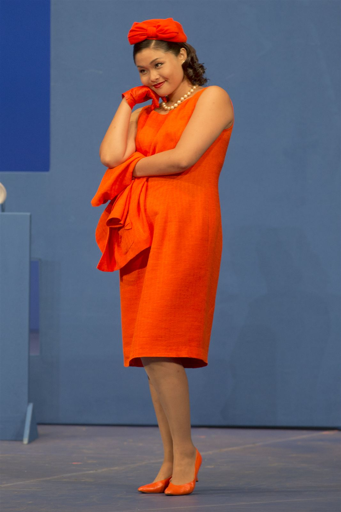
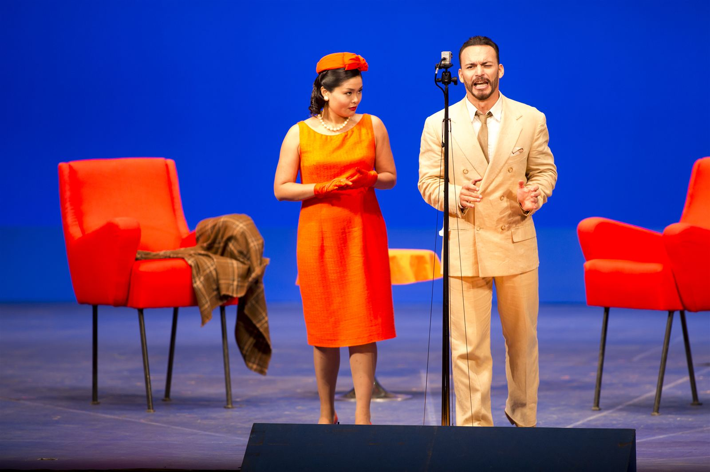
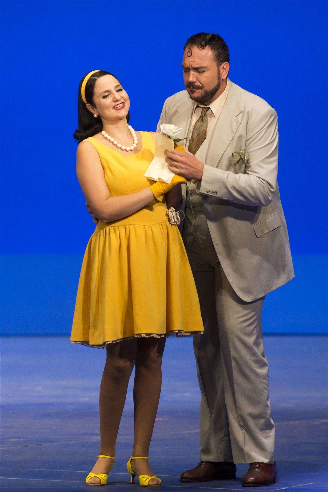
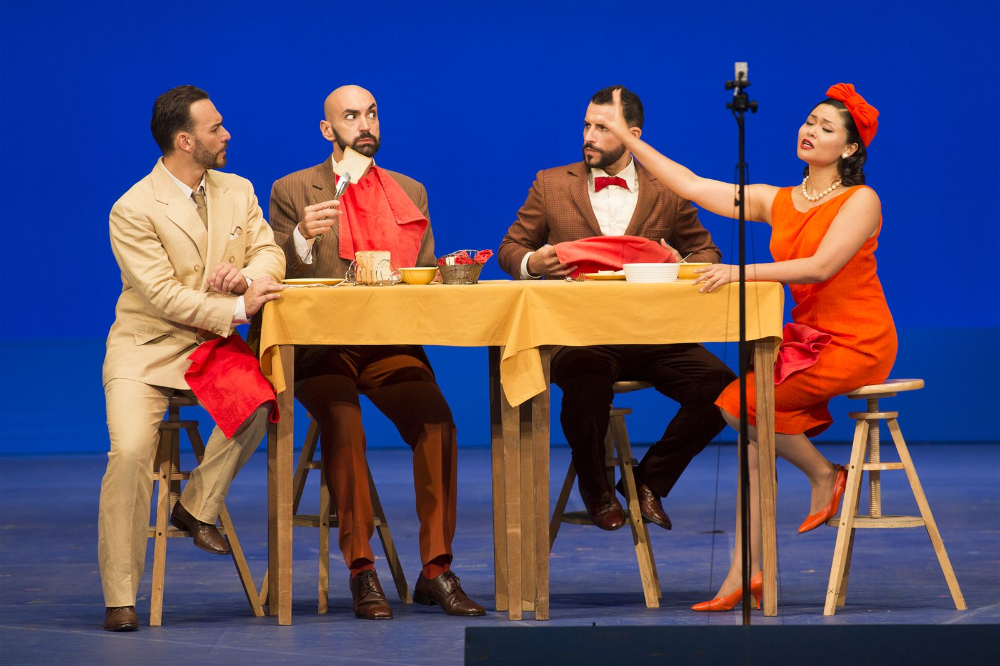
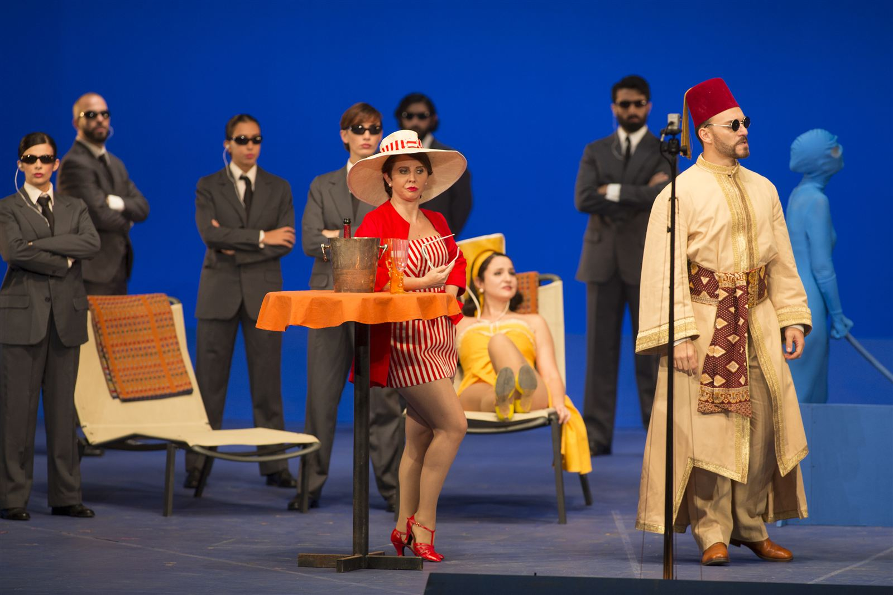
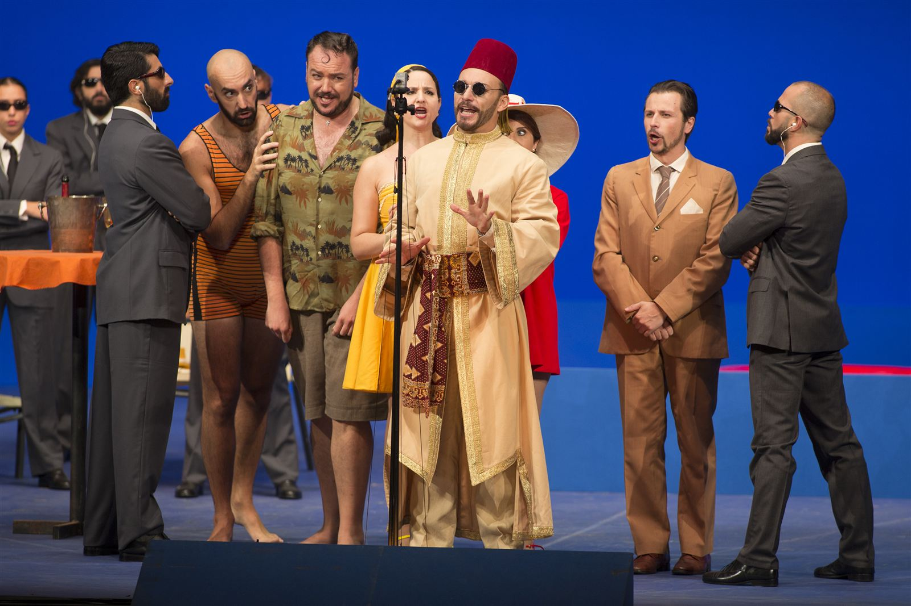

Il Rossini ventenne del 1812 trasportato nell'America di Hopper e di Jackie Kennedy. Una satira sulla maschera sociale attraversa due secoli e cambia codici: cambia il salotto, cambia la palette, non cambia il bersaglio. Per Cristian, è il primo grande lavoro sui costumi soli: niente scena, niente regia, soltanto il corpo vestito del cantante come unica cosa solida nel mondo virtuale di Sorin. Una lezione di sottrazione, e di precisione cromatica al millimetro.
The twenty-year-old Rossini of 1812 transported into the America of Hopper and Jackie Kennedy. A satire on the social mask crosses two centuries and changes codes: the salon changes, the palette changes, the target does not. For Cristian, it is the first major work on costume alone: no set, no direction, only the singer's clothed body as the one solid thing in Sorin's virtual world. A lesson in subtraction, and in chromatic precision to the millimetre.
Le Rossini de vingt ans de 1812 transporté dans l'Amérique de Hopper et de Jackie Kennedy. Une satire sur le masque social traverse deux siècles et change de codes : le salon change, la palette change, la cible ne change pas. Pour Cristian, c'est le premier grand travail sur les costumes seuls : ni décor, ni mise en scène, seulement le corps habillé du chanteur comme la seule chose solide dans le monde virtuel de Sorin.
La Pietra del Paragone, Rossini's youthful comic masterpiece, returns to the stage of the Théâtre du Châtelet in January 2014 in a production directed by Giorgio Barberio Corsetti and visual artist Pierrick Sorin, with the musical direction of Jean-Christophe Spinosi at the head of his Ensemble Matheus. Cristian Taraborrelli signs the costumes, drawn by Angela Buscemi.
The production transposes Rossini's 1812 satire on snobbery and social masquerade into a luminous, quintessentially American imagery: the cold, surgical light of an Edward Hopper canvas; the chic geometry of early-1960s Jackie Kennedy. Behind the singers, Sorin's miniature optical sets, filmed live, fold the action into a continuous play of trompe-l'œil where the costume becomes the only solid, breathing presence on stage.
La Pietra del Paragone, capolavoro buffo del giovane Rossini, torna in scena al Théâtre du Châtelet di Parigi nel gennaio 2014 nella produzione firmata da Giorgio Barberio Corsetti con l'artista visivo Pierrick Sorin, sotto la direzione musicale di Jean-Christophe Spinosi alla testa del suo Ensemble Matheus. I costumi sono di Cristian Taraborrelli, su figurini di Angela Buscemi.
L'allestimento trasporta la satira rossiniana del 1812 sullo snobismo e sulla maschera sociale dentro un immaginario americano nitidissimo: la luce fredda e chirurgica dei quadri di Edward Hopper, la geometria chic della Jackie Kennedy dei primi anni Sessanta. Dietro i cantanti, le scenografie ottiche in miniatura di Sorin, riprese dal vivo, ripiegano l'azione in un gioco continuo di trompe-l'œil dove il costume resta l'unica presenza solida e respirante sulla scena.
La Pietra del Paragone, chef-d'œuvre comique du jeune Rossini, retrouve la scène du Théâtre du Châtelet en janvier 2014 dans la production signée par Giorgio Barberio Corsetti et l'artiste visuel Pierrick Sorin, sous la direction musicale de Jean-Christophe Spinosi à la tête de son Ensemble Matheus. Les costumes sont de Cristian Taraborrelli, d'après les figurines d'Angela Buscemi.
La production transpose la satire rossinienne de 1812 sur le snobisme et le masque social dans un imaginaire américain d'une netteté chirurgicale : la lumière froide d'un tableau d'Edward Hopper, la géométrie chic de Jackie Kennedy au début des années soixante. Derrière les chanteurs, les scénographies optiques miniatures de Sorin, filmées en direct, replient l'action dans un jeu continu de trompe-l'œil où le costume reste la seule présence solide et respirante sur le plateau.
L'Opera — Il primo trionfo di Rossini
La Pietra del Paragone è un melodramma giocoso in due atti su libretto di Luigi Romanelli, andato in scena per la prima volta al Teatro alla Scala di Milano il 26 settembre 1812. Rossini aveva appena vent'anni: era il suo primo titolo commissionato da un grande teatro, e fu un trionfo immediato. La Scala lo riprese 53 volte in una sola stagione — un caso senza precedenti per un autore così giovane.
La trama è una commedia di smascheramenti: il Conte Asdrubale, ricco e disilluso, si finge rovinato per scoprire chi tra le donne che lo corteggiano e gli amici che lo adulano lo ami davvero. La «pietra di paragone» — la pietra che gli orefici usano per saggiare la purezza dell'oro — diventa qui metafora morale: una verifica delle anime, condotta con la leggerezza glaciale del giovane Rossini.
Il successo del 1812 fu tale che il viceré napoleonico d'Italia, Eugène de Beauharnais, scrisse al Ministro dell'Interno chiedendo che Rossini fosse esonerato dal servizio militare: «Non posso prendermi la responsabilità di esporre al fuoco nemico un'esistenza così preziosa — perderemmo forse un soldato mediocre, ma salveremmo per la nazione un genio». La Pietra del Paragone aprirà la strada al Barbiere di Siviglia, alla Cenerentola, all'intera stagione della grande opera buffa rossiniana.
La Pietra del Paragone is a melodramma giocoso in two acts to a libretto by Luigi Romanelli, premiered at Teatro alla Scala in Milan on 26 September 1812. Rossini was barely twenty: it was his first commission from a major opera house, and an instant triumph. La Scala revived it 53 times in a single season — an unprecedented run for so young a composer.
The plot is a comedy of unmaskings: the wealthy, disillusioned Count Asdrubale pretends to be ruined in order to discover which of the women courting him and the friends flattering him truly love him. The «touchstone» of the title — the stone goldsmiths use to test the purity of gold — becomes a moral metaphor: a verification of souls, carried out with the icy lightness of the young Rossini.
The success of 1812 was such that Napoleon's viceroy of Italy, Eugène de Beauharnais, wrote to the Minister of the Interior asking that Rossini be exempted from military service: «I cannot take it upon myself to expose to the enemy's fire so precious an existence — we would perhaps lose a mediocre soldier, but we would save a genius for the nation». La Pietra del Paragone opened the road to The Barber of Seville, La Cenerentola and the entire great season of Rossinian opera buffa.
La Pietra del Paragone est un melodramma giocoso en deux actes sur un livret de Luigi Romanelli, créé au Teatro alla Scala de Milan le 26 septembre 1812. Rossini avait à peine vingt ans : c'était sa première commande d'un grand théâtre, et ce fut un triomphe immédiat. La Scala le reprit 53 fois en une seule saison — un cas sans précédent pour un auteur si jeune.
L'intrigue est une comédie des démasquages : le riche et désabusé comte Asdrubale feint d'être ruiné pour découvrir qui, parmi les femmes qui le courtisent et les amis qui le flattent, l'aime vraiment. La «pierre de touche» du titre — celle dont les orfèvres usent pour éprouver la pureté de l'or — devient une métaphore morale : une vérification des âmes menée avec la légèreté glaciale du jeune Rossini.
Le succès de 1812 fut tel que le vice-roi napoléonien d'Italie, Eugène de Beauharnais, écrivit au ministre de l'Intérieur pour demander que Rossini soit exempté du service militaire : «Je ne puis prendre sur moi d'exposer au feu de l'ennemi une existence si précieuse — nous perdrions peut-être un soldat médiocre, mais nous sauverions pour la nation un génie». La Pietra del Paragone ouvrira la voie au Barbier de Séville, à la Cenerentola, à toute la grande saison de l'opera buffa rossinienne.
La Visione — Hopper, Jackie, Rossini
L'idea registica di Corsetti e Sorin parte da una constatazione: la satira rossiniana sui parassiti del salotto, sulla nobiltà in disarmo e sulla finta indigenza non ha mai smesso di parlare al presente — basta cambiare i codici. La produzione li trasporta nell'America del primo decennio Kennedy, quando un nuovo glamour borghese rimpiazzava l'aristocrazia europea come modello mondiale di stile.
Da qui la doppia citazione visiva. Edward Hopper, per la luce: quel verde piscina, quel rosso laccato, quel giallo limone che nei suoi quadri sembrano squillare e gelare allo stesso tempo — un cromatismo americano che scolpisce le figure invece di accarezzarle. Jackie Kennedy, per la silhouette: tailleur a linea A, abiti in lana bouclé, guanti corti, cappelli pillbox, scarpe décolleté basse. Una grammatica di pulizia geometrica che si sposa naturalmente con l'umorismo a orologeria di Rossini.
Il costume di Cristian Taraborrelli diventa così doppio strumento: maschera sociale dei personaggi rossiniani — il Conte, la Marchesa Clarice, il poeta Pacuvio, il giornalista Macrobio — e dispositivo plastico in dialogo con la pittura di Hopper. Sui figurini di Angela Buscemi, ogni colore è deciso al millimetro per stagliarsi contro le scenografie virtuali di Sorin: nello spazio bianco delle proiezioni, l'unico oggetto reale e tridimensionale resta il corpo vestito del cantante.
The directorial idea of Corsetti and Sorin starts from a simple observation: Rossini's satire on parasites of the drawing-room, on a nobility in retreat and on feigned poverty has never stopped speaking to the present — one need only change the codes. The production moves it into the America of the early Kennedy decade, when a new bourgeois glamour was replacing the European aristocracy as the world's model of style.
Hence the twofold visual reference. Edward Hopper, for the light: that pool green, that lacquered red, that lemon yellow that in his paintings seem to ring out and freeze at the same time — an American chromatism that sculpts figures rather than caressing them. Jackie Kennedy, for the silhouette: A-line suits, bouclé wool dresses, short gloves, pillbox hats, low-heel pumps. A grammar of geometric cleanliness that meets, quite naturally, the clockwork humour of Rossini.
Cristian Taraborrelli's costumes thus become a twin instrument: a social mask for Rossini's characters — the Count, the Marchesa Clarice, the poet Pacuvio, the journalist Macrobio — and a plastic device in dialogue with Hopper's painting. On Angela Buscemi's figurines every colour is decided to the millimetre to stand out against Sorin's virtual sets: in the white space of the projections, the only real and three-dimensional object that remains is the singer's clothed body.
L'idée de mise en scène de Corsetti et Sorin part d'une simple constatation : la satire rossinienne des parasites de salon, d'une noblesse en repli et de l'indigence feinte n'a jamais cessé de parler au présent — il suffit d'en changer les codes. La production la transpose dans l'Amérique de la première décennie Kennedy, lorsqu'un nouveau glamour bourgeois remplaçait l'aristocratie européenne comme modèle mondial de style.
D'où la double citation visuelle. Edward Hopper, pour la lumière : ce vert piscine, ce rouge laqué, ce jaune citron qui dans ses tableaux semblent claironner et glacer en même temps — un chromatisme américain qui sculpte les figures plutôt que de les caresser. Jackie Kennedy, pour la silhouette : tailleurs en ligne A, robes en laine bouclée, gants courts, chapeaux pillbox, escarpins à talon bas. Une grammaire de propreté géométrique qui rencontre, tout naturellement, l'humour d'horlogerie de Rossini.
Les costumes de Cristian Taraborrelli deviennent ainsi un double instrument : masque social des personnages rossiniens — le Comte, la Marchesa Clarice, le poète Pacuvio, le journaliste Macrobio — et dispositif plastique en dialogue avec la peinture de Hopper. Sur les figurines d'Angela Buscemi chaque couleur est décidée au millimètre pour se détacher des décors virtuels de Sorin : dans l'espace blanc des projections, le seul objet réel et tridimensionnel qui reste est le corps habillé du chanteur.
I Costumi — Anatomia di un guardaroba
Tradurre la Pietra del Paragone nel guardaroba della Camelot kennediana significa affrontare un compito apparentemente paradossale: fare convivere la metrica tagliente di Rossini, costruita per ridurre il salotto a una partitura di malizia, con un decennio — gli anni Sessanta americani — in cui il salotto era stato esattamente l'oggetto di adorazione del rotocalco mondiale. Il paradosso si scioglie nel momento in cui si capisce che la satira rossiniana non è rivolta a un'epoca: è rivolta alla maschera sociale come tale. Spostarla in avanti di centocinquant'anni non la indebolisce: la affila.
Su questa premessa, Cristian Taraborrelli costruisce un guardaroba di cinque corpi parlanti. Il Conte Asdrubale, ricco e disilluso, è il primo cliente di un guardaroba che traduce la sua posizione di osservatore: blazer da club nautico, pantaloni da yacht, polo a colletto inamidato, palette neutra di blu marina, beige, panna; un'eleganza che non richiede approvazione perché il suo conto in banca, prima del finto fallimento, parla per lui. Quando Asdrubale si traveste da turco per smascherare i parassiti, il costume non si traveste con lui: il Sigillara entra in scena con un mantello indeciso fra costume di carnevale e accessorio di fortuna, segnale che la finzione è volutamente di bassa lega, calcolata per essere riconoscibile a chi ha già il sospetto di esserne oggetto.
La Marchesa Clarice — vera amante del Conte, l'unica figura femminile che la pietra di paragone non corromperà — entra in scena vestita da Jackie: tailleur in lana bouclé rosa Schiaparelli, gonna a tubino al ginocchio, guanti corti bianchi, cappello pillbox. La citazione è precisa al milligrammo, e tuttavia la lettura non è nostalgica: il rosa di Clarice è il rosa che indossava Jackie Kennedy a Dallas il 22 novembre 1963, il giorno dell'assassinio di JFK. Una premonizione costumistica della fragilità del personaggio: Clarice è la sola che ami davvero, e proprio per questo la sola esposta al lutto. Il resto del suo guardaroba, in scena, oscilla fra i pastelli da garden-party degli East Hamptons e le sete da cocktail di Manhattan, in una drammaturgia di silhouette puntuali come battute di tempo musicale.
Le due cacciatrici di dote, Aspasia e Donna Fulvia, sono i contrappunti caricaturali di Clarice. Aspasia veste colori da sirena — turchese, fucsia, oro — con tagli che gridano lo sforzo: l'abito è di un decennio dopo (un Sessanta inoltrato e un po' kitsch, da casinò di Las Vegas più che da salotto Park Avenue). Donna Fulvia veste i lutti scenografici delle vedove ricche, in nero pesante e velluti che sembrano usciti da un romanzo di James, ma con cappellini che inclinano già verso il ridicolo. Cristian e Angela Buscemi, sui figurini, mettono in scena con il taglio della stoffa quello che il libretto di Romanelli affida alle parole: il peggior tipo di donna che corteggi un uomo è quella che si veste come pensa di doversi vestire. La maschera della maschera, il secondo ordine dell'inganno.
I parassiti maschili — il poeta Pacuvio, il giornalista Macrobio, il cavaliere Giocondo — vestono il rovescio comico del Conte. Pacuvio, poeta da quattro soldi che si crede Tasso, indossa una giacca di velluto color ruggine, fazzoletto da poeta nel taschino, pantalone scuro mal stirato: l'abito di chi ha letto le memorie di Truman Capote sulle copertine ma non ha mai aperto il libro. Macrobio, giornalista mondano con la lingua biforcuta, è in Brooks Brothers d'ordinanza con una piccola innovazione: la cravatta troppo larga, il collo troppo aperto, la pochette troppo vistosa, ognuno di questi dettagli regola la distanza di sicurezza da un vero giornalista del New Yorker degli anni Sessanta. Giocondo, l'unico onesto fra gli uomini di salotto, indossa abiti da ufficiale fuori servizio — un'eleganza un po' fuori moda, il cui pudore è il segno della sua moralità.
Tutto il guardaroba di Cristian, su figurini di Angela Buscemi, lavora sul contrappunto cromatico con le proiezioni di Sorin. Le scenografie ottiche sono in bianco e nero o tono pastello slavato; la palette dei costumi è al contrario satura, definita, calda. Lo stacco non è estetico, è ontologico: nello spazio della finzione virtuale, l'unico oggetto reale è il corpo del cantante. Taraborrelli prende questa premessa registica e la trasforma in regola sartoriale: ogni costume deve essere abbastanza solido, abbastanza presente, abbastanza colorato da reggere il confronto con un'illusione. La Pietra del Paragone diventa così, sotto le mani dello studio, una lezione di sottrazione applicata al guardaroba: poche silhouette, molti dettagli; pochi materiali, molto senso. La satira di Rossini sopravvive intatta. Anzi, respira meglio.
To translate La Pietra del Paragone into the wardrobe of Camelot Kennedy is to take on an apparently paradoxical task: making Rossini's cutting metric — built to reduce the drawing-room to a score of malice — coexist with a decade, the American 1960s, in which the drawing-room was precisely the worldwide tabloid's object of worship. The paradox dissolves the moment one understands that Rossini's satire is not aimed at an era: it is aimed at the social mask as such. Pushing it forward by a hundred and fifty years does not weaken it: it sharpens it.
On this premise Cristian Taraborrelli builds a wardrobe of five speaking bodies. Count Asdrubale, wealthy and disillusioned, is the first client of a wardrobe that translates his position as observer: yacht-club blazer, sailing trousers, starched-collar polos, a neutral palette of navy blue, beige and cream — an elegance that needs no approval because his bank account, before the staged ruin, speaks for him. When Asdrubale disguises himself as a Turk to unmask the parasites, the costume does not disguise itself with him: the Sigillara enters with a cloak hesitant between carnival costume and improvised accessory, the sign that the disguise is deliberately of low rank, calculated to be recognisable to anyone who already suspects being its target.
The Marchesa Clarice — the Count's true lover, the only female figure the touchstone will not corrupt — enters dressed as Jackie: pink Schiaparelli bouclé-wool suit, knee-length pencil skirt, short white gloves, pillbox hat. The citation is exact to the milligram, and yet the reading is not nostalgic: Clarice's pink is the pink Jackie Kennedy wore in Dallas on 22 November 1963, the day of JFK's assassination. A costume premonition of the character's fragility: Clarice is the only one who truly loves, and precisely because of this the only one exposed to mourning. The rest of her stage wardrobe oscillates between East Hampton garden-party pastels and Manhattan cocktail silks, in a dramaturgy of silhouettes as punctual as musical bar lines.
The two dowry-hunters, Aspasia and Donna Fulvia, are the caricatural counterpoints to Clarice. Aspasia wears siren colours — turquoise, fuchsia, gold — with cuts that shout the effort: her dress is from a decade later (a late, slightly kitsch sixties, more Las Vegas casino than Park Avenue salon). Donna Fulvia wears the scenographic mournings of rich widows, in heavy black and velvets that seem to come out of a Henry James novel, but with hats already tilting toward the ridiculous. Cristian and Angela Buscemi, on the costume sketches, stage with the cut of cloth what Romanelli's libretto entrusts to words: the worst kind of woman who courts a man is the one who dresses as she thinks she ought to dress. The mask of the mask, the second order of the deceit.
The male parasites — the poet Pacuvio, the journalist Macrobio, the chevalier Giocondo — wear the comic reverse of the Count. Pacuvio, a poet on the cheap who fancies himself a Tasso, sports a rust-coloured velvet jacket, poet's handkerchief in the breast pocket, a badly pressed dark trouser: the suit of a man who has read Truman Capote's memoirs on dust jackets but never opened the book. Macrobio, society journalist with a forked tongue, is in regulation Brooks Brothers with one small innovation: the tie too wide, the collar too open, the pocket square too loud — each detail calibrating the safety distance from a real New Yorker writer of the 1960s. Giocondo, the only honest man in the salon, wears the off-duty officer's clothes — an elegance slightly out of date whose modesty is the sign of his morality.
The whole of Cristian's wardrobe, on Angela Buscemi's sketches, works on the chromatic counterpoint with Sorin's projections. The optical scenography is in black and white or washed-out pastel; the costume palette, on the contrary, is saturated, defined, warm. The contrast is not aesthetic but ontological: in the space of virtual fiction, the only real object is the singer's body. Taraborrelli takes this directorial premise and turns it into a tailoring rule: every costume must be solid enough, present enough, coloured enough to stand its ground against an illusion. La Pietra del Paragone thus becomes, in the studio's hands, a lesson in subtraction applied to the wardrobe: few silhouettes, many details; few materials, much meaning. Rossini's satire survives intact. Indeed, it breathes more easily.
Traduire La Pietra del Paragone dans la garde-robe de Camelot kennedienne, c'est affronter une tâche en apparence paradoxale : faire coexister la métrique tranchante de Rossini, bâtie pour réduire le salon à une partition de malice, avec une décennie — les années soixante américaines — où le salon était précisément l'objet d'adoration du rotocalque mondial. Le paradoxe se dissout dès qu'on comprend que la satire rossinienne n'est pas dirigée contre une époque : elle est dirigée contre le masque social en tant que tel. La pousser cent cinquante ans plus loin ne l'affaiblit pas : elle l'aiguise.
Sur cette prémisse Cristian Taraborrelli construit une garde-robe de cinq corps parlants. Le Comte Asdrubale, riche et désabusé, est le premier client d'une garde-robe qui traduit sa position d'observateur : blazer de yacht club, pantalons de bord, polos à col empesé, une palette neutre de bleu marine, de beige et de crème. La Marchesa Clarice entre habillée en Jackie : tailleur en laine bouclée rose Schiaparelli, jupe crayon au genou, gants courts blancs, chapeau pillbox. La citation est exacte au milligramme, et pourtant la lecture n'est pas nostalgique : le rose de Clarice est celui que Jackie Kennedy portait à Dallas le 22 novembre 1963, jour de l'assassinat de JFK. Une prémonition costumière de la fragilité du personnage.
L'ensemble de la garde-robe de Cristian, sur les figurines d'Angela Buscemi, travaille sur le contrepoint chromatique avec les projections de Sorin. La scénographie optique est en noir et blanc ou en pastel délavé ; la palette des costumes, au contraire, est saturée, définie, chaude. L'écart n'est pas esthétique mais ontologique : dans l'espace de la fiction virtuelle, le seul objet réel est le corps du chanteur. La Pietra del Paragone devient ainsi, sous les mains du studio, une leçon de soustraction appliquée à la garde-robe : peu de silhouettes, beaucoup de détails ; peu de matériaux, beaucoup de sens. La satire de Rossini survit intacte. Elle respire mieux.
Galleria — Foto di scena







Curiosità
53 repliche in una stagione. Alla prima alla Scala del 26 settembre 1812, Rossini aveva vent'anni: la Pietra del Paragone fu replicata 53 volte in una sola stagione, un primato per un compositore esordiente. Da quel successo prese forma la carriera del «cigno di Pesaro».
L'esonero dal servizio militare. Eugène de Beauharnais, viceré napoleonico d'Italia, scrisse personalmente al Ministero per ottenere a Rossini l'esenzione dalla leva: l'opera lo aveva talmente impressionato da spingerlo a difendere «un'esistenza preziosa». Pochi compositori sono stati — letteralmente — salvati dalla guerra dalla forza di un'opera buffa.
Hopper, perché. La pittura di Edward Hopper (1882–1967) racconta l'America moderna come un teatro di solitudini illuminate al neon: stanze d'albergo, diner notturni, finestre aperte sul niente. La sua tinta squillante ma fredda, dove ogni colore sembra isolato dagli altri, traduce in luce ciò che Rossini fa con il ritmo: un'esattezza geometrica che svela il vuoto dietro le maschere.
Jackie, perché. Jacqueline Bouvier Kennedy, First Lady dal 1961 al 1963, impose un nuovo codice: linea pulita, bouclé, guanti corti, pillbox. Era la prima volta che lo stile di una donna pubblica diventava modello globale prima ancora di passare per la moda di Parigi. La produzione legge la Marchesa Clarice e l'aristocrazia rossiniana come prototipi di quel glamour borghese che cinquant'anni dopo Jackie codifica per la televisione.
Corsetti, Taraborrelli e l'altra Pietra. La regia di Corsetti aveva già incontrato La Pietra del Paragone qualche anno prima, in una produzione diversa con scenografie firmate da Cristian Taraborrelli, insignita nel 2007 del Premio Abbiati della critica musicale italiana per la migliore scenografia. La versione Châtelet 2014 è un nuovo capitolo della loro collaborazione decennale, affidato questa volta interamente al linguaggio del costume.
53 performances in one season. At its premiere at La Scala on 26 September 1812, Rossini was twenty years old: La Pietra del Paragone was given 53 times in a single season, a record for a debutant composer. From that triumph took shape the career of the «Swan of Pesaro».
Saved from the army. Eugène de Beauharnais, Napoleon's viceroy of Italy, personally wrote to the ministry to obtain Rossini's exemption from military service: the opera had impressed him so much that he chose to defend «so precious an existence». Few composers have been — literally — saved from war by the force of a comic opera.
Why Hopper. The painting of Edward Hopper (1882–1967) tells modern America as a theatre of neon-lit solitudes: hotel rooms, late-night diners, windows open onto nothing. His ringing yet cold tones, where each colour seems isolated from the others, translate into light what Rossini does with rhythm: a geometric exactness that uncovers the emptiness behind the mask.
Why Jackie. Jacqueline Bouvier Kennedy, First Lady from 1961 to 1963, imposed a new code: a clean line, bouclé, short gloves, the pillbox hat. It was the first time the style of a public woman became a global model before even passing through Paris fashion. The production reads Marchesa Clarice and Rossini's aristocracy as prototypes of that bourgeois glamour which Jackie, fifty years later, would codify for television.
Corsetti, Taraborrelli and the other Pietra. Corsetti's direction had already met La Pietra del Paragone some years earlier, in a different production with set design by Cristian Taraborrelli, awarded in 2007 the Premio Abbiati of Italian music critics for best stage design. The Châtelet 2014 version is a new chapter in their decade-long collaboration, this time entrusted entirely to the language of costume.
53 représentations en une saison. À la création de La Scala, le 26 septembre 1812, Rossini avait vingt ans : La Pietra del Paragone fut redonnée 53 fois en une seule saison, un record pour un compositeur débutant. C'est de ce triomphe qu'est née la carrière du «Cygne de Pesaro».
Sauvé du service militaire. Eugène de Beauharnais, vice-roi napoléonien d'Italie, écrivit personnellement au ministère pour obtenir l'exemption de Rossini : l'opera l'avait tellement impressionné qu'il choisit de défendre «une existence si précieuse». Peu de compositeurs ont été — littéralement — sauvés de la guerre par la force d'un opera buffa.
Pourquoi Hopper. La peinture d'Edward Hopper (1882–1967) raconte l'Amérique moderne comme un théâtre de solitudes éclairées au néon : chambres d'hôtel, diners nocturnes, fenêtres ouvertes sur rien. Sa teinte éclatante et froide, où chaque couleur semble isolée des autres, traduit en lumière ce que Rossini fait avec le rythme : une exactitude géométrique qui découvre le vide derrière le masque.
Pourquoi Jackie. Jacqueline Bouvier Kennedy, Première Dame de 1961 à 1963, imposa un nouveau code : ligne nette, bouclé, gants courts, chapeau pillbox. C'était la première fois que le style d'une femme publique devenait un modèle mondial avant même de passer par la mode parisienne. La production lit la Marchesa Clarice et l'aristocratie rossinienne comme prototypes de ce glamour bourgeois que Jackie, cinquante ans plus tard, codifiera pour la télévision.
Corsetti, Taraborrelli et l'autre Pietra. La mise en scène de Corsetti avait déjà rencontré La Pietra del Paragone quelques années plus tôt, dans une production différente, avec une scénographie signée Cristian Taraborrelli, qui reçut en 2007 le Premio Abbiati de la critique musicale italienne pour la meilleure scénographie. La version Châtelet 2014 est un nouveau chapitre de leur collaboration de plus d'une décennie, confié cette fois entièrement au langage du costume.
I Collaboratori
Regia
Giorgio Barberio Corsetti
Attore, drammaturgo e regista, fondatore della compagnia La Gaia Scienza nel 1976 e poi di Fattore K. (omaggio a Kafka) nel 2001. Direttore della Sezione Teatro della Biennale di Venezia dal 1999, dal 2019 direttore artistico del Teatro di Roma. Lavora sul confine tra teatro, video, danza e arti visive. Ha firmato regie d'opera per la Fenice, La Scala (Turandot, 2011), il Mariinsky e numerosi teatri europei. La sua collaborazione con Cristian Taraborrelli attraversa più di un decennio di produzioni rossiniane, mozartiane e pucciniane.
Regia & Video
Pierrick Sorin
Artista visivo francese nato a Nantes nel 1960, formatosi all'École des Beaux-Arts della sua città (DNSEP 1988). Erede dichiarato di Georges Méliès e Jacques Tati, è celebre per i suoi «théâtres optiques»: dispositivi in miniatura dove un suo doppio olografico recita sketch comici dentro scenografie ricostruite con oggetti veri. Dal 2006 si dedica anche all'opera lirica: La Pietra del Paragone segna la sua prima volta con le videoproiezioni come unica scenografia. Collaborerà di nuovo con Corsetti e Taraborrelli per la Turandot della Scala (2011).
Direttore d'orchestra
Jean-Christophe Spinosi
Direttore e violinista francese nato in Corsica nel 1964, fondatore nel 1991 dell'Ensemble Matheus — oggi una delle formazioni di riferimento per il repertorio barocco e classico. Ha inciso integrali vivaldiane e diretto pressoché tutti i titoli rossiniani, da Le Comte Ory al Theater an der Wien fino a Otello e Cenerentola con Cecilia Bartoli. Dal 2007 firma una nuova produzione operistica ogni stagione al Théâtre du Châtelet. Chevalier des Arts et des Lettres dal 2006.
Figurini
Angela Buscemi
Costumista e illustratrice, collaboratrice storica dello studio Taraborrelli per il disegno dei figurini. La sua mano traduce le indicazioni cromatiche e materiche del costume designer in tavole pittoriche che diventano poi la guida operativa delle sartorie. Per la Pietra del Paragone, le sue tavole costruiscono lo spettro Hopper-Kennedy che attraversa l'intera produzione.
Direction
Giorgio Barberio Corsetti
Actor, playwright and director, founder of La Gaia Scienza in 1976 and later of Fattore K. (a tribute to Kafka) in 2001. Artistic director of the Venice Biennale's Theatre Section from 1999 and, since 2019, artistic director of the Teatro di Roma. He works at the frontier between theatre, video, dance and the visual arts. His opera credits include productions for La Fenice, La Scala (Turandot, 2011), the Mariinsky and many European houses. His collaboration with Cristian Taraborrelli spans more than a decade of Rossini, Mozart and Puccini productions.
Direction & Video
Pierrick Sorin
French visual artist born in Nantes in 1960, trained at the École des Beaux-Arts of his home city (DNSEP, 1988). A self-declared heir of Georges Méliès and Jacques Tati, he is celebrated for his «optical theatres»: miniature devices in which his own holographic double performs comic sketches inside sets rebuilt from real objects. Since 2006 he has worked in opera as well: La Pietra del Paragone marks the first time his video projections serve as sole scenography. He will work again with Corsetti and Taraborrelli on La Scala's Turandot (2011).
Conductor
Jean-Christophe Spinosi
French conductor and violinist born in Corsica in 1964, founder of the Ensemble Matheus in 1991 — today one of the reference ensembles for the Baroque and Classical repertoire. He has recorded the Vivaldi cycle and conducted nearly the whole of Rossini, from Le Comte Ory at the Theater an der Wien to Otello and La Cenerentola with Cecilia Bartoli. Since 2007 he signs a new opera production each season at the Théâtre du Châtelet. Chevalier des Arts et des Lettres since 2006.
Costume Sketches
Angela Buscemi
Costume designer and illustrator, longstanding collaborator of Taraborrelli's studio for figurino drawing. Her hand translates the costume designer's chromatic and material directions into pictorial sketches that then guide the workshops. For La Pietra del Paragone, her plates build the Hopper-Kennedy spectrum that runs through the entire production.
Mise en scène
Giorgio Barberio Corsetti
Acteur, dramaturge et metteur en scène, fondateur de La Gaia Scienza en 1976 puis de Fattore K. (hommage à Kafka) en 2001. Directeur de la Section Théâtre de la Biennale de Venise à partir de 1999, depuis 2019 directeur artistique du Teatro di Roma. Il travaille à la frontière entre théâtre, vidéo, danse et arts visuels. Ses mises en scène lyriques figurent à La Fenice, à La Scala (Turandot, 2011), au Mariinsky et dans de nombreuses maisons européennes. Sa collaboration avec Cristian Taraborrelli traverse plus d'une décennie de productions rossiniennes, mozartiennes et pucciniennes.
Mise en scène & Vidéo
Pierrick Sorin
Artiste visuel français né à Nantes en 1960, formé à l'École des Beaux-Arts de sa ville natale (DNSEP 1988). Héritier déclaré de Georges Méliès et de Jacques Tati, il est célèbre pour ses «théâtres optiques» : dispositifs miniatures où son propre double holographique joue des sketches comiques dans des décors reconstitués avec des objets réels. Depuis 2006 il travaille aussi pour l'opéra : La Pietra del Paragone marque la première fois où ses projections vidéo tiennent lieu de scénographie unique. Il retrouvera Corsetti et Taraborrelli pour la Turandot de la Scala (2011).
Chef d'orchestre
Jean-Christophe Spinosi
Chef et violoniste français né en Corse en 1964, fondateur en 1991 de l'Ensemble Matheus — aujourd'hui l'une des formations de référence pour le répertoire baroque et classique. Il a enregistré l'intégrale vivaldienne et dirigé presque tous les opera de Rossini, du Comte Ory au Theater an der Wien jusqu'à Otello et la Cenerentola avec Cecilia Bartoli. Depuis 2007 il signe une nouvelle production opératique chaque saison au Théâtre du Châtelet. Chevalier des Arts et des Lettres depuis 2006.
Figurines
Angela Buscemi
Costumière et illustratrice, collaboratrice de longue date du studio Taraborrelli pour le dessin des figurines. Sa main traduit les indications chromatiques et matérielles du costume designer en planches picturales qui guident ensuite le travail des ateliers. Pour La Pietra del Paragone, ses planches construisent le spectre Hopper-Kennedy qui traverse toute la production.
Creative Team
Stampa & Recensioni
Recensione — sui costumi
«...la tinta americana dei colori squillanti, ma freddi come i quadri di Hopper, nei costumi chic alla Jackie Kennedy, esaltavano l'umorismo geometrico della scrittura rossiniana, conferendole chiave attuale ed esattezza cristallina.»
Concertclassic
La Pietra del Paragone de Rossini au Châtelet — chef-d'œuvre bouffe
Recensione della produzione 2014 al Châtelet con la regia di Corsetti e Sorin sotto la bacchetta di Spinosi.
ResMusica
Reprise attendue de La Pietra del Paragone au Théâtre du Châtelet
Attesa ripresa al Théâtre du Châtelet, gennaio 2014.
FranceInfo
«La Pietra del Paragone, un Rossini délirant sous l'emprise de la vidéo»
Panoramica della produzione, con focus sui teatri ottici di Pierrick Sorin e sul lavoro sui costumi.
Apparato critico
«Sigillara!»
Il finto turco che il Conte impersona per smascherare i parassiti. Una sola parola incomprensibile, ripetuta per tre atti come shibboleth dell'inganno: chi ride senza capire si dichiara cortigiano.
La Pietra del Paragone — Atto II, libretto di Luigi Romanelli (1812)
«Non si può salvare un'esistenza così preziosa. Perderemmo forse un soldato mediocre, ma salveremmo per la nazione un genio.»
Così il viceré napoleonico d'Italia Eugène de Beauharnais, dopo aver visto la Pietra alla Scala, scrisse al Ministero per ottenere a Rossini ventenne l'esonero dal servizio militare. Una delle più belle protezioni di un'opera buffa nella storia dello Stato.
«Such a precious existence cannot be put at risk. We would perhaps lose a mediocre soldier, but we would save a genius for the nation.»
So wrote Napoleon's viceroy of Italy Eugène de Beauharnais, after seeing La Pietra at La Scala, to the Ministry to obtain for the twenty-year-old Rossini exemption from military service. One of the finest protections an opera buffa has ever earned a state.
«On ne peut exposer une existence si précieuse. Nous perdrions peut-être un soldat médiocre, mais nous sauverions pour la nation un génie.»
Ainsi écrivait Eugène de Beauharnais, vice-roi napoléonien d'Italie, après avoir vu La Pietra à la Scala.
Eugène de Beauharnais — Lettera al Ministro dell'Interno, settembre 1812
«Rossini ha l'ironia disinvolta del giovane che ha già visto la società intera passargli davanti come un teatro di marionette ben dipinte. La Pietra del Paragone è il manifesto di questa indifferenza acuta: nessuno qui ama nessuno, e la musica si diverte a misurare la temperatura dell'inganno.»
«Rossini has the easy irony of the young man who has already seen the whole of society pass before him like a theatre of well-painted puppets. La Pietra del Paragone is the manifesto of this acute indifference: no one here loves anyone, and the music takes pleasure in measuring the temperature of the deceit.»
«Rossini a l'ironie désinvolte du jeune homme qui a déjà vu toute la société lui passer devant comme un théâtre de marionnettes bien peintes.»
Stendhal — Vie de Rossini (Parigi, 1824)
«Nello spazio bianco delle proiezioni di Sorin, l'unico oggetto solido sul palco è il costume. Taraborrelli vestendo Asdrubale e Clarice come fossero appena usciti da una cover di LIFE Magazine 1962 non fa una citazione di moda: fa una traduzione strutturale. La satira di Rossini è l'eterna commedia della maschera; la maschera, nel 2014, è il guardaroba.»
«In the white space of Sorin's projections, the only solid object on stage is the costume. Taraborrelli, by dressing Asdrubale and Clarice as if they had just walked out of a 1962 LIFE Magazine cover, is not making a fashion citation: he is performing a structural translation. Rossini's satire is the eternal comedy of the mask; in 2014, the mask is the wardrobe.»
«Dans l'espace blanc des projections de Sorin, le seul objet solide sur le plateau est le costume. Taraborrelli ne fait pas une citation de mode : il opère une traduction structurelle. La satire de Rossini est l'éternelle comédie du masque ; en 2014, le masque c'est la garde-robe.»
Critica scenografica — Théâtre du Châtelet, gennaio 2014
Tags